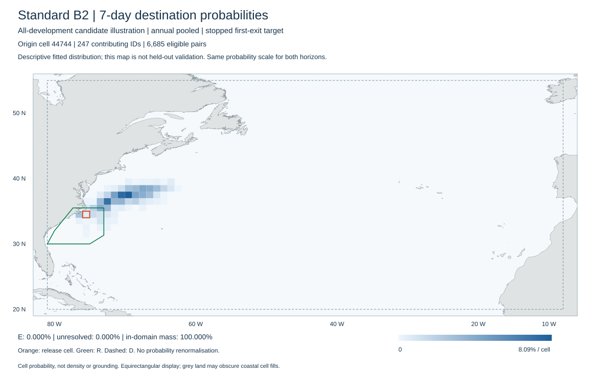
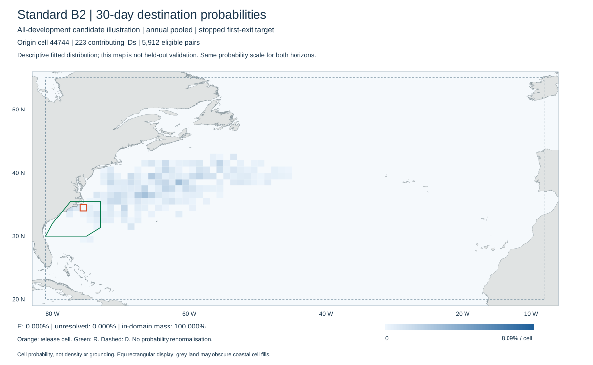

empirical_b2_20261029T121555_976173Z
Development validation · User review pending
B2 estimates a separate empirical row for each origin cell and horizon, P_h(i,j)=N_h(i,j)/sum_k N_h(i,k). Only fitting IDs contribute counts. There is no smoothing, fallback, optimisation, propagation or velocity/environmental conditioning. The target is first observed exit from D followed by absorption in E; missing follow-up is not an exit.
| horizon_days | eligible_pairs | eligible_ids | evaluable_pairs | unsupported_pairs | brier | Brier_95_interval |
|---|---|---|---|---|---|---|
| 7 | 303288 | 385 | 303288 | 0 | 0.929001 | [0.921631, 0.937923] |
| 30 | 268998 | 337 | 268998 | 0 | 0.994751 | [0.991777, 0.998311] |
Standard Brier, lower is better. Intervals: 200 whole-ID bootstrap resamples with fixed fitted forecasts.
| horizon_days | availability | zero_true_probability_pairs | zero_true_probability_fraction | observed_exit_pairs | mean_predicted_exit_probability |
|---|---|---|---|---|---|
| 7 | 1.000000 | 6315 | 0.020822 | 0 | 0.000000 |
| 30 | 1.000000 | 46964 | 0.174589 | 0 | 0.000000 |
| horizon_days | indexed_source_rows | supported_rows | unsupported_rows | unsupported_positive_area_rows | boundary_only_rows |
|---|---|---|---|---|---|
| 7 | 54 | 37 | 17 | 4 | 13 |
| 30 | 54 | 37 | 17 | 4 | 13 |

